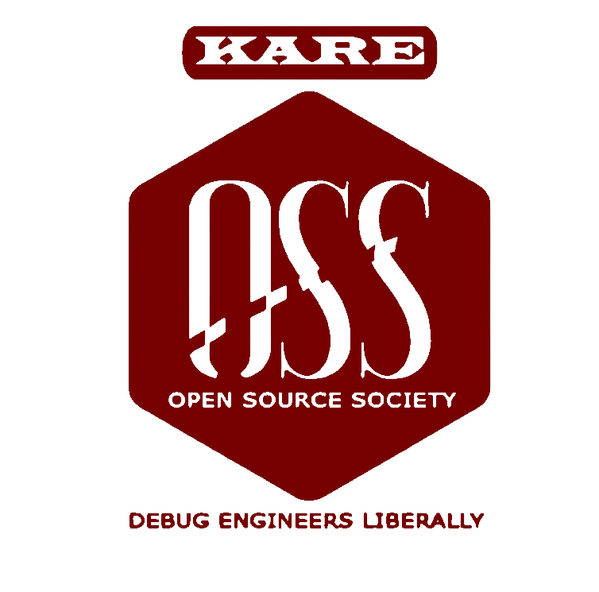

WONDERS OF AI 2.0


Develop a deep learning system that analyzes retinal images to detect early signs of diabetic retinopathy. The project should explore advanced image preprocessing and feature extraction techniques to assist healthcare professionals in early intervention.
Create a machine learning model using electronic health records to predict patient readmission risks. Focus on integrating demographics, clinical history, and treatment data to support proactive patient care and reduce readmission rates.
Design an AI system that employs anomaly detection techniques to flag fraudulent transactions in real time. Address challenges like imbalanced datasets and evolving fraud patterns while ensuring scalability and accuracy.
Build a predictive model that fuses sentiment analysis from financial news and social media with technical market indicators. The goal is to forecast stock price movements and provide insights for informed investment strategies.
Develop an AI-driven solution that utilizes drone-captured imagery to detect crop diseases early. Emphasize robust dataset creation, image segmentation, and actionable insights to support precision agriculture.
Create a reinforcement learning system that optimizes water usage in agriculture. The model should adapt to varying weather conditions, soil moisture levels, and crop types to enhance irrigation efficiency.
Design an AI algorithm to predict and manage traffic congestion in urban settings. Utilize real-time sensor data to dynamically adjust traffic signal timings and propose efficient routing solutions.
Build a machine learning model to forecast vehicle maintenance needs using IoT sensor data. The solution should focus on time series analysis and anomaly detection to prevent breakdowns and improve road safety.
Develop a recommendation system that personalizes product suggestions in real time based on customer behavior. Explore collaborative filtering and dynamic data analysis to enhance user engagement and sales.
Create a predictive model that forecasts inventory needs and prevents stock-outs in retail. Integrate sales data, seasonal trends, and supply chain logistics for efficient inventory control.
Design an AI-driven tutoring platform that adapts educational content to individual student performance. Leverage data analytics and adaptive learning paths to enhance engagement and learning outcomes.
Develop a tool that uses natural language processing to detect plagiarism by identifying paraphrased content. The system should analyze semantic similarities and cross-reference with a large corpus of documents.
Create an AI model to identify and filter out misinformation on social media platforms. Utilize text analysis and network behavior metrics to improve the reliability of online content.
Build a sentiment analysis tool that tracks public opinion on social issues in real time. The project should process vast social media data streams and provide insights for policymakers and researchers.
Develop an AI system that predicts air quality indices by integrating data from weather stations, pollution sensors, and satellite imagery. Emphasize data fusion techniques to offer actionable insights for urban environments.
Create a predictive model that forecasts wildfire occurrences using historical data, weather conditions, and satellite imagery. Focus on feature extraction and early-warning systems to aid disaster management.
Build an AI-powered system that optimizes energy usage in urban buildings. Utilize predictive analytics and real-time monitoring to reduce energy waste and promote sustainability.
Design a model that uses real-time data to optimize waste collection routes in smart cities. The solution should integrate IoT sensor inputs and routing algorithms to improve urban waste management efficiency.
Develop an AI algorithm that enables robots to navigate complex indoor environments autonomously. Focus on sensor integration, obstacle detection, and dynamic path planning to enhance operational efficiency.
Create a control system for robotic arms using reinforcement learning. The project should enable the arm to perform precise assembly tasks by learning optimal movements through iterative trial and error.
Build a machine learning model that forecasts machinery breakdowns by analyzing sensor data and operational logs. Aim to reduce downtime and maintenance costs through proactive intervention strategies.
Develop an AI system to optimize production schedules based on demand forecasting and resource allocation. Integrate real-time data from manufacturing processes to enhance overall efficiency.
Design a machine learning model to identify cybersecurity threats by analyzing network traffic patterns. The focus should be on real-time anomaly detection and adaptive threat response.
Create an AI-powered intrusion detection system that continuously adapts to emerging cybersecurity threats. Employ deep learning techniques to recognize novel attack patterns and mitigate risks promptly.
Build a game AI that adjusts its behavior based on real-time analysis of player actions. The system should create dynamic challenges and personalized gaming experiences, enhancing overall playability.
Develop an AI system that generates unique game levels and puzzles using procedural content generation. Focus on ensuring variability and maintaining game balance to keep the gaming experience fresh and engaging.
Create an AI system that produces augmented reality content in real time based on user context and environment. The project should blend computer vision and context-aware algorithms to deliver immersive experiences.
Design a virtual assistant that leverages AI to provide interactive support during immersive VR training sessions. Ensure the system can adapt to trainee performance and deliver timely feedback to improve learning outcomes.
Build a predictive model that forecasts renewable energy output from solar and wind sources. The project should integrate weather data and historical performance metrics to aid in efficient grid management.
Develop an AI optimization tool for smart grids to dynamically balance energy supply and demand. Utilize real-time sensor data and predictive analytics to enhance the reliability and efficiency of energy distribution.
Create an AI-powered chatbot that adapts its responses based on user emotions. Combine natural language processing with sentiment analysis to provide empathetic and effective customer service.
Develop a machine learning model that predicts emerging consumer trends by analyzing social media and sales data. The project should help marketers identify and adapt to shifting consumer behaviors.
Build a tool that automates contract analysis by identifying potential risks and suggesting improvements. Use natural language processing to parse legal documents and extract critical clauses efficiently.
Design a recommendation engine that curates personalized content for streaming platforms. Leverage collaborative filtering and real-time data analysis to match viewer preferences with relevant content.
Create an AI simulation model that forecasts urban growth and infrastructure needs using demographic, economic, and environmental data. The project should support urban planners in developing sustainable and future-ready city strategies.
Note: Read the problem statements carefully and choose wisely.